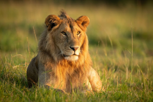
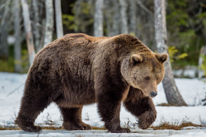

На нашей планете живут различные представители животного мира. Их можно разделить на две большие группы: дикие животные и домашние животные. Животных, которые живут сами по себе в естественной среде обитания, называют дикими. Они самостоятельно заботятся о себе, добывают пищу и строят жильё. Слоны, львы, кенгуру — это дикие животные. Примеры таких животных на территории России — лиса, заяц, медведь, волк, лось. Люди ловят рыбу, а также охотятся на разных диких животных. Благодаря этой деятельности человек получает пищу и мех. Однако не стоит забывать, что гибель большого количества животных определённого вида может привести к его вымиранию. Вмешиваясь в природу из-за своих нужд, человек снизил количество многих диких животных, поэтому сейчас есть представители, которые нуждаются в охране. Многим живым существам облегчит жизнь поддержка человека. Поэтому, хотя дикие животные живут отдельно от человека, люди всё равно должны им помогать. Например, подкармливать их суровой зимой, когда пищи становится меньше, создавать заповедники — охраняемые территории, где живут редкие дикие животные.
 Дикие животные живут в природе, и они не приспособлены к жизни в деревне или на ферме, обычной квартире, как домашние животные. К диким животным леса можно отнести волка, лису, зайца, борсука, ёжика, белку, медведя, бобра, выдру, лося, крота, оленя. В Африке это гепарды, львы, бегемоты, слоны, газели, гиены, антилопы, ящерицы, верблюды, зебры, обезьяны. В Австралии это кенгуру, утконос, коала, собака динго, ехидна. В Азии это дикобраз, панда, тигр, як, тапир. Диких животных бесчисленное множество, всех перечислить невозможно.
Больше о диких животных можно узнать здесь.
Также много интересных фактов можно прочитать на этом сайте.